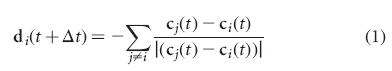

DIRECTION-TO-AVOID-OTHERS
Begin NetLogo code:do-every delta-t
[ask all-individuals with [distance-within the-personal-space]
[set my-next-desired-direction
subtract my-next-desired-direction
unit-vector subtract location myself my-location]]
End NetLogo code
The variable the-personal-space in the above is the value of α in [1]. It can be safely changed to any positive value using the slider defined in CREATE-SLIDER-FOR-PERSONAL-SPACE. If you add and abs angle-from-me <= cone-of-vision to distance-within the-personal-space then only those who are within my cone of vision will be considered. cone-of-vision can be defined by a slider as a variable that ranges from 0 to 180 degrees.
DIRECTION-TOWARDS-OTHERS updates my desired direction towards those near me that are not within my personal space. DIRECTION-TO-ALIGN-WITH-OTHERS aligns with those within my local interaction range and INFORMED-DIRECTION implements a preferred direction.
Note that the desired-direction is used by TURN-IN-DIRECTION-AT-MAXIMUM-SPEED to turn me.
This subtracts a vector to me from each of the others in range. It implements equation 1 in [1].

[1] states "Avoidance is the highest priority. If neighbours are not detected within this region then the individual will tend to become attracted towards, and aligned...". This implementation does not give priority to this behaviour over attraction and alignment behaviours. The priority should only apply if there is a conflict, i.e. the attraction or alignment behaviours compute a desired direction that conflicts with the one computed by this behaviour.
This was implemented by Ken Kahn.
[1] Couzin, I.D., Krause, J., Franks, N.R. & Levin, S.A.(2005) Effective leadership and decision making in animal groups on the move Nature 433, 513-516.